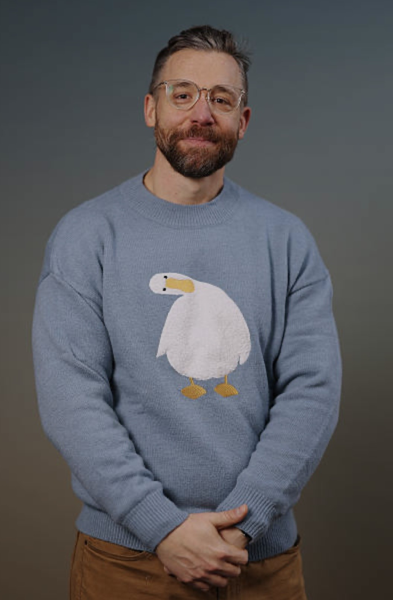

from Ted. And the duck.
Ted Tremper is the Executive Director of the CREATORS COALITION ON AI (CCAI), which he helped found in 2025 with fellow filmmakers including DANIEL KWAN, JOSEPH GORDON-LEVITT, JANET YANG, JONATHAN WANG, SIAN HEDER and DAVID S. GOYER. CCAI's goal is to bring together the people working in film, television and content creation to build a future where technology empowers human creativity rather than replacing it.
He also produced THE AI DOC: OR HOW I BECAME AN APOCALOPTIMIST (Focus Features). It was supposed to take eight months. It took almost three years. During that time he built relationships with more than 100 people inside and outside the frontier labs, and learned to translate between the people building AI and the people it affects.
Before that he spent two decades in comedy as a director, writer, producer, and showrunner. His credits include BORAT SUBSEQUENT MOVIEFILM (Amazon), THE DAILY SHOW WITH TREVOR NOAH (Comedy Central), I LOVE YOU, AMERICA WITH SARAH SILVERMAN (Hulu), and THIS WEEK AT THE COMEDY CELLAR (Comedy Central). He also co-created SHRINK (Peacock).
Ted grew up in the Pacific Northwest, in the town where TWIN PEAKS was filmed. He now lives in Los Angeles. When he's not thinking and talking about building a world where technology empowers human creativity instead of replacing it, he does pottery and woodworking and kisses his dog, BETTS, directly on the snout.